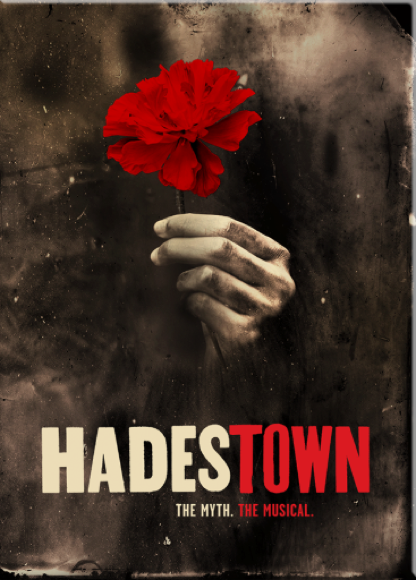
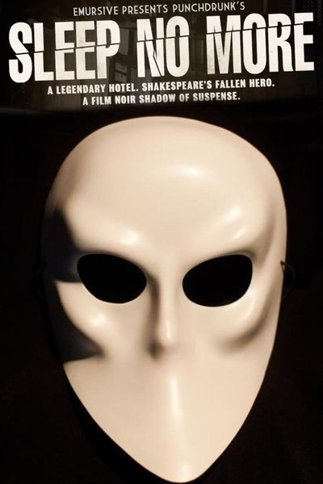
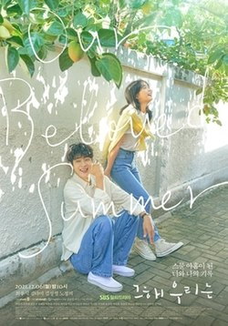
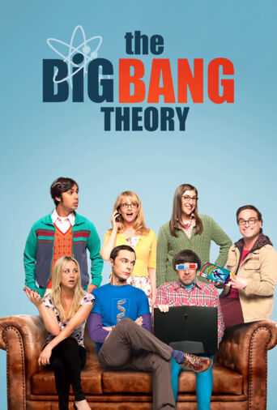
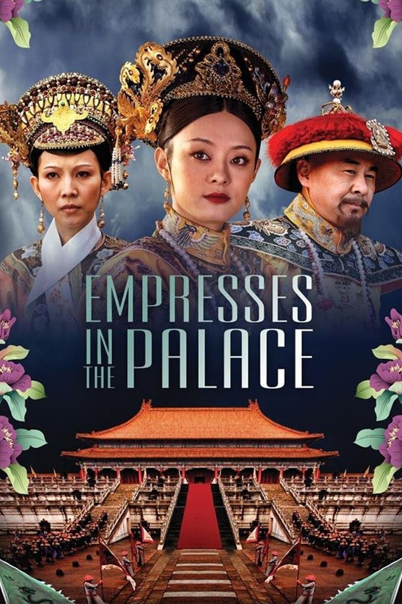
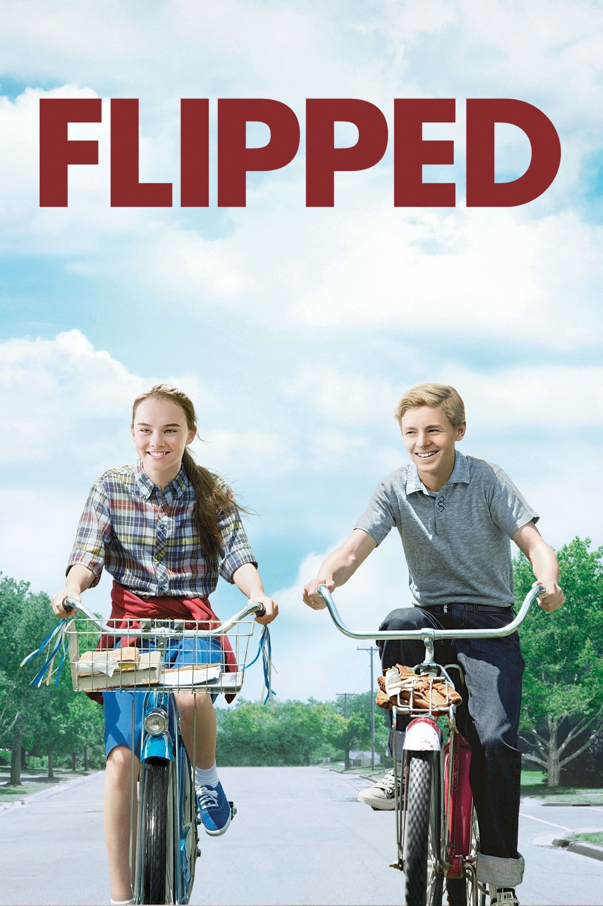
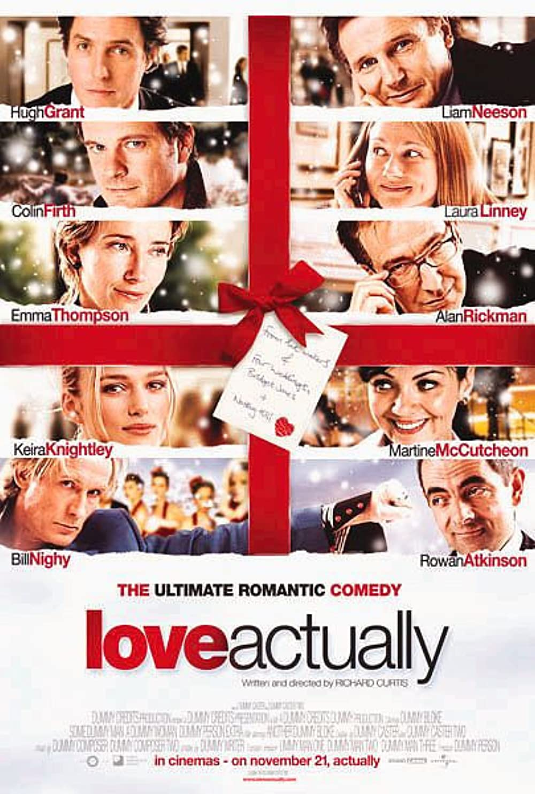
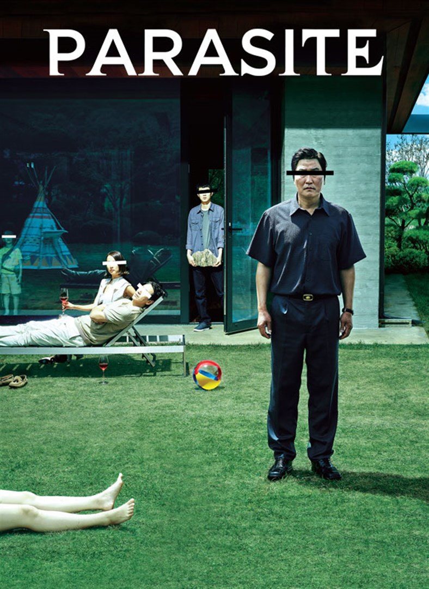
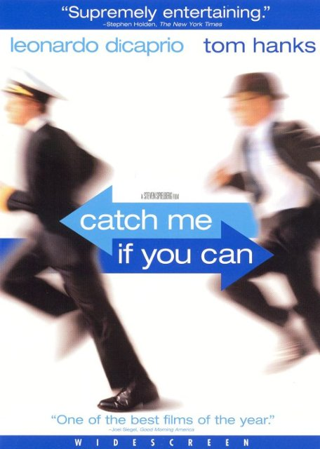

My favorite dramas
Dramas
Hadestown
Hadestown is a musical with music, lyrics and book by Anaïs Mitchell. It tells a version of the ancient Greek myth of Orpheus and Eurydice, where Orpheus goes to the underworld to rescue his lover, Eurydice. The original version of the musical premiered in the town of Barre, Vermont, in 2006. There was also a production in Vergennes in the same year and a tour between Vermont and Massachusetts in 2007. Then Mitchell, unsure about the future of the musical, turned it into a concept album, released in 2010. In 2012, Mitchell met director Rachel Chavkin, and the two started to rework the stage production, with additional songs and dialogue. The new version of the musical, developed for the stage and directed by Chavkin, premiered Off-Broadway at New York Theatre Workshop on May 6, 2016, and ran through July 31. Following productions in Edmonton and London, the show premiered in previews on Broadway in March 2019. The Broadway production opened to critical acclaim and received numerous awards and nominations. At the 73rd Tony Awards, Hadestown received a total of 14 nominations (the most for the evening) and won eight of them, including Best Musical and Best Original Score.
Sleep No More
Sleep No More is the New York City production of a site-specific work of theatre created by British theatre company Punchdrunk. It is primarily based on William Shakespeare's Macbeth, with inspiration also taken from noir films (especially those of Alfred Hitchcock), as well as some reference to the 1697 Paisley witch trials. It is expanded from their original 2003 London incarnation (at the Beaufoy Building) and their Brookline, Massachusetts 2009 collaboration with Boston's American Repertory Theatre (at the Old Lincoln School). The company reinvented Sleep No More as a co-production with Emursive, and began performances on March 7, 2011. Sleep No More won the 2011 Drama Desk Award for Unique Theatrical Experience and won Punchdrunk special citations at the 2011 Obie Awards for design and choreography.
TV series
Our Beloved Summer
Our Beloved Summer is a South Korean romantic comedy television series. Billed as "Studio N's first original series", it is directed by Kim Yoon-jin with screenplay by Lee Na-eun, starring Choi Woo-shik, Kim Da-mi, Kim Sung-cheol and Roh Jeong-eui. The series is a coming-of-age story about a former couple who are forced to come together again when a documentary they shot in high school goes viral. It is available for streaming on Netflix.
The Big Bang Theory
The Big Bang Theory is an American television sitcom created by Chuck Lorre and Bill Prady, both of whom served as executive producers on the series, along with Steven Molaro, all of whom also served as head writers. It premiered on CBS on September 24, 2007, and concluded on May 16, 2019, having broadcast 279 episodes over 12 seasons.
Empresses in the Palace
Empresses in the Palace, is a 2011 Chinese television series based on the Internet novel of the same name by Liu Lianzi. The series was first aired in China on 17 November 2011. In April 2015, the series was added to US region of Netflix and has since been taken off and put on Amazon Prime Video. It was edited down to six episodes, each with a ninety-minute duration. The original audio was kept intact with the addition of closed captions in English.
Movies
Flipped
Flipped is a 2010 American romantic comedy-drama film co-written and directed by Rob Reiner, and based on Wendelin Van Draanen's 2001 novel of the same name. Starring Callan McAuliffe, Madeline Carroll, Rebecca De Mornay, Anthony Edwards, John Mahoney, Penelope Ann Miller, Aidan Quinn, and Kevin Weisman, the film tells the story of two eighth graders who start to have feelings for each other, despite being total opposites. Flipped was released in theaters in the United States on August 6, 2010 by Warner Bros. Pictures. It garnered lukewarm reviews from critics, and grossed $4.3 million against a $14 million budget.
Love Actually
Love Actually is a 2003 Christmas-themed romantic comedy film written and directed by Richard Curtis. It features an ensemble cast, composed predominantly of British actors, many of whom had worked with Curtis in previous film and television projects. Mostly filmed on location in London, the screenplay delves into different aspects of love as shown through ten separate stories involving a wide variety of individuals, many of whom are shown to be interlinked as the tales progress. The story begins five weeks before Christmas and is played out in a weekly countdown until the holiday, followed by an epilogue that takes place one month later.
Green Book

Green Book is a 2018 American biographical comedy-drama film directed by Peter Farrelly. Set in 1962, the film is inspired by the true story of a tour of the Deep South by African American classical and jazz pianist Don Shirley and Italian American bouncer Frank "Tony Lip" Vallelonga, who served as Shirley's driver and bodyguard. The film was written by Farrelly, Brian Hayes Currie and Vallelonga's son, Nick Vallelonga, based on interviews with his father and Shirley, as well as letters his father wrote to his mother.The film is named after The Negro Motorist Green Book, a mid-20th century guidebook for African-American travelers written by Victor Hugo Green.
Parasite
Parasite is a 2019 South Korean black comedy thriller film directed by Bong Joon-ho, who co-wrote the screenplay with Han Jin-won. The film, starring Song Kang-ho, Lee Sun-kyun, Cho Yeo-jeong, Choi Woo-shik, Park So-dam, Jang Hye-jin, and Lee Jung-eun, follows a poor family who scheme to become employed by a wealthy family and infiltrate their household by posing as unrelated, highly qualified individuals.
Catch Me If You Can
Catch Me If You Can is a 2002 American biographical crime film directed and produced by Steven Spielberg from a screenplay by Jeff Nathanson and starring Leonardo DiCaprio and Tom Hanks, Christopher Walken, Martin Sheen, and Nathalie Baye. The film is based on the autobiography of Frank Abagnale, who allegedly, before his 19th birthday, successfully performed cons worth millions of dollars by posing as a Pan American World Airways pilot, a Georgia doctor, and a Louisiana parish prosecutor. The truth of his story is questionable.